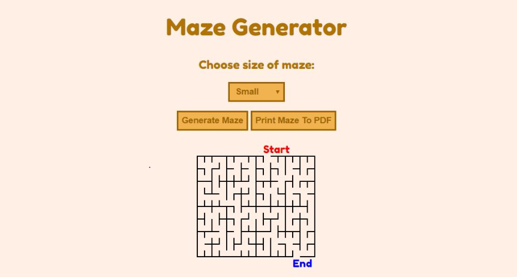

Matthew Wix
Software Developer
Matthew Wix
Tallahassee, Fl | (904)312-4141 | mtw16@my.fsu.edu
Github - https://github.com/MWix123/
Education
Bachelor of Science in Computer Science & Applied Mathematics
August 2020
Florida State University (FSU), Tallahassee, FL
Overall GPA: 3.97
Technical & Language Skills
Programming Languages: C++, C, Java, HTML, CSS, JavaScript, Python, VBA, SQL
Platforms: Linux, Microsoft Windows, Apple (Mac)
Microsoft Office Suite: Word, Excel, PowerPoint
Related Experience
FSU Office of Financial Aid, Tallahassee, FL
Technical Support Specialist
August 2018 - Present
- Revamp and maintain Florida State University’s Financial Aid Webpage (https://financialaid.fsu.edu/)
- Used Microsoft Excel to create custom spreadsheets and pivot tables to extract data
- Develop and maintain database for tracking office hardware information using Microsoft Access
- Develop metric charts and graphs for presentations and statistical analysis
- Provide technical support and troubleshooting to 20-30 employees with hardware and software issues
- Design documents, infographics, and financial guides
Projects
See here for coding projects/websites
Financial Data Extraction
- Implemented a custom spreadsheet with VBA that significantly improved the FSU Financial Aid Accounting department’s productivity by streamlining the process of extracting financial data
Budget Worksheet
- Created a Budget Worksheet for FSU’s Office of Financial Aid (https://financialaid.fsu.edu/sites/g/files/upcbnu646/files/Forms/2019/FSU%20-%20Budget%20Worksheet.pdf)
Education-Related Experience
Data Structures and Algorithms Project
August 2018 - December 2018
- Used C++ to write a program to convert from infix to postfix expressions using a stack data structure.
Object-Oriented Programming
January 2018 - May 2018
- Understood the Object-Oriented Programming concepts and C++ techniques
- Implemented Sieve of Eratosthenes algorithm operating on single bits for memory savings.
- Familiarized with Linked List data structure.
Involvement
FSU Association for Computing Machinery (ACM)
August 2017 - Present
- Attended and participated in collegiate programming contests while working alongside students from other universities to create one of a kind projects in a designated period of time.
<

>
Maze Generator
Link to webpage:
http://matthewwix.com/Maze-Generator/
Link to GitHub repository:
https://github.com/MWix123/Maze-Generator
This webpage randomly generates a maze of size 16x16, 32x32 or 64x64 based on the user's choice. The generated maze can also be downloaded as a PDF by clicking on the appropriate button.